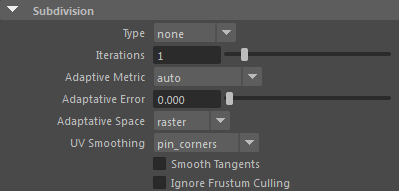

| 延伸阅读 |
|---|
| 有关 Arnold 多边形形状和参数的完整文档，请参见《Arnold 用户手册》中的多边形。 |

这些设置通过几何体对象的属性编辑器提供。
请注意，您还可以通过全局 Arnold 渲染覆盖设置来设置全局最大细分数，每个对象的实际细分数将是这两个值中的较小值。
- 增加 Arnold 的细分迭代次数并使用 Maya 的平滑网格预览功能（可以按键盘上的 3 进行访问）时，应格外小心。Arnold 还会在最终图像中渲染此平滑状态的预览。这可能会导致细分网格中的多边形数量远远超过所需的数量，从而延长导出/渲染时间。